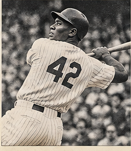
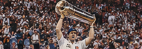

SPORTSALMANAC
ALL SPORTS. ALL ERAS. ALL STATS.
TODAY IN SPORTS HISTORY

1964
The Tokyo Summer Olympics open, marking the first Olympic Games held in Asia.
FAMOUS SEASONS
LANDMARK NUMBERS
CHAMPIONSHIP ARCHIVE

A selection of remarkable careers and performances.
Leading figures among the included entries. Not an exhaustive world-record list.
Explore careers, tournament totals and landmark performances.
2026 EDITION · CHECK EACH RECORD’S COVERAGESelected historical entries, not exhaustive current leaderboards. Choose a sport and statistic to sort by value. Source and coverage appear with every row.
RESULTS CHECKED 12 OCTOBER 2026 · Completed 2025 and 2026 editions are included below. Ongoing competitions have no winner assigned.
Years identify the final or event year. Super Bowls follow the previous NFL season. Coverage varies: NFL game years 1967–2026; NBA/BAA 1947–2026; MLB 1980–2025 (2026 not yet decided; no 1994); NHL 1990–2026 (no 2005). Other competition windows appear in their records.
Comparisons show only matching statistics with the same coverage. Bars show raw values; totals alone do not measure overall ability.
Every sport has a story.
Find a league, travel to a season, compare the legends, and discover the numbers behind the moments.